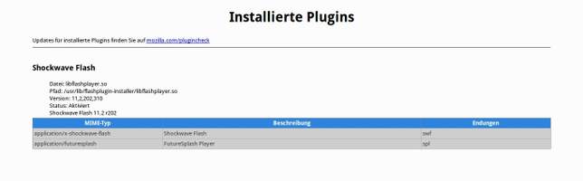

Adobe Flash
Dieser Artikel wurde für die folgenden Ubuntu-Versionen getestet:
Ubuntu 16.04 Xenial Xerus
Ubuntu 14.04 Trusty Tahr
Zum Verständnis dieses Artikels sind folgende Seiten hilfreich:
Flash wurde ursprünglich von der Firma Macromedia entwickelt, die zwischenzeitlich von Adobe aufgekauft wurde. Genutzt wird es meistens als sog. Flash-Plugin für den Webbrowser. Adobe Flash findet man heutzutage (noch) auf vielen Internetseiten, wenn auch mit stark abnehmender Tendenz: als Werbebanner, als Funktion zum Abspielen von Musik oder Videos oder auch als komplette Webseite.
Dem Flash-Plugin für Linux fehlt die unter Windows vorhandene Hardwareunterstützung durch die Grafikkarte. Daher kommt es regelmäßig zu Klagen über die schlechte Performance unter Linux, z.B. beim Abspielen von Videos aus dem Internet. Dieses Problem ließe sich nur durch eine entsprechende Funktion auch für Linux lösen, die aber weder vorhanden noch in Planung ist. Davon sind insbesondere Rechner mit schwachen Prozessoren wie beispielsweise Netbooks betroffen.
Anfang Oktober 2011 veröffentlichte Adobe Flash 11, das erstmals eine stabile Version für 64-bit-Systeme lieferte. Flash 11 für Linux löste zwar eine Reihe von Problemen der Vorgängerversionen, wurde aber im Gegensatz zur Windows-Version jahrelang nicht weiterentwickelt. Erst seit August 2016 wird Flash für Linux von Adobe wieder aktiv betreut. Trotz der Möglichkeit, nun wieder eine aktuelle Flash-Version verwenden zu können, ändert sich an der oben beschriebenen Grundproblematik – keine Hardware-Beschleunigung – nichts.
Am 25. Juli 2017 hat Adobe angekündigt  , die Aktualisierung sowie die Auslieferung des Flash-Players zum Jahresende 2020 endgültig einzustellen.
, die Aktualisierung sowie die Auslieferung des Flash-Players zum Jahresende 2020 endgültig einzustellen.
Obwohl Flash kostenlos benutzt werden kann, handelt es sich nicht um freie Software. Wer freie Alternativen einsetzen möchte, findet Anregungen im Artikel Flash vermeiden. Darüber hinaus ist Adobe Flash eine ständige Quelle von Sicherheitslücken. Damit man automatisch Aktualisierungen erhält, empfiehlt sich dringend die Installation aus den offiziellen Paketquellen.
Installation¶
Experten-Info:
Adobe Flash als Browser-Plugin existiert in zwei Varianten:
NPAPI - Plugin für Firefox und alle Browser, die Firefox-Plugins nutzen können (SeaMonkey, Pale Moon). Keine Hardware-Beschleunigung, kein DRM.
PPAPI - Plugin für Chromium und alle Browser, die Chromium-Plugins nutzen können (Opera, Vivaldi). In Google Chrome ist ein aktuelles Flash-Plugin bereits enthalten.
Nach der Installation muss der Browser neu gestartet werden, um das Flash-Plugin zu erkennen.
NPAPI¶
Um Flash 25.x oder neuer zu erhalten, reicht es aus, das folgende Paket aus den offiziellen Paketquellen zu installieren [1]:
flashplugin-installer (multiverse, nur NPAPI)
 mit apturl
mit apturl
Paketliste zum Kopieren:
sudo apt-get install flashplugin-installer
sudo aptitude install flashplugin-installer
NPAPI und PPAPI¶
Alternativ (nicht gleichzeitig!) kann man auch das Paket aus den Canonical-Partner-Quellen verwenden (die vorher erst aktiviert werden müssen):
adobe-flashplugin (Canonical Partner, NPAPI und PPAPI)
mit apturl
Paketliste zum Kopieren:
sudo apt-get install adobe-flashplugin
sudo aptitude install adobe-flashplugin
Installiert wird Flash 25 oder neuer (NPAPI und PPAPI) (siehe auch Changelog  ).
).
Manuell¶
Hinweis!
Fremdpakete können das System gefährden.
Anmerkung: Flash wird auf diesem Weg nicht über die automatischen Updates aktualisiert. Dadurch erhält man keine Sicherheitsaktualisierungen. Es ist außerdem darauf zu achten, dass die Pakete flashplugin-nonfree, adobe-flashplugin oder flashplugin-installer aus den offiziellen Paketquellen und das Plugin als .deb- oder .tar.gz-Datei nicht gleichzeitig installiert sein dürfen, da es bei mehreren installierten Varianten zu Problemen kommt.
Fremdpaket¶
Seit Flash 10 bietet Adobe .deb-Pakete  zur Installation an. So kann man Flash in der NPAPI-Variante bequem selbst installieren. Es ist die Version "APT für Debian/Ubuntu" auszuwählen, das Paket herunterzuladen und manuell zu installieren [2]. Hierzu sind Root-Rechte erforderlich [3].
zur Installation an. So kann man Flash in der NPAPI-Variante bequem selbst installieren. Es ist die Version "APT für Debian/Ubuntu" auszuwählen, das Paket herunterzuladen und manuell zu installieren [2]. Hierzu sind Root-Rechte erforderlich [3].
Archivdatei¶
Flash in der NPAPI-Variante kann auch als Archivdatei heruntergeladen werden. Diese muss entpackt [4] werden und die enthaltene Datei libflashplayer.so in den versteckten Ordner ~/.mozilla/plugins/ im Homeverzeichnis kopiert werden. Chromium, Firefox, Opera und andere Browser erkennen das Flashplugin auch, wenn es nach /usr/lib/mozilla/plugins kopiert wird. Dann sind zum Kopieren jedoch Root-Rechte [3] erforderlich.
Standalone Flash Player¶
Um eine Flash-Datei (.swf) ohne Browser wiedergeben zu können, kann man einen Standalone-Flashplayer herunterladen. Dazu wählt man von der Seite Adobe.com den Link "Download the Linux debugger and standalone players". Nachdem man das Archiv entpackt hat, findet man im Ordner standalone/release/ ein weiteres Archiv, das ebenfalls entpackt wird. Die enthaltene Datei flashplayer kann man durch einen Doppelklick öffnen.
Kontrolle nach der Installation¶
Nach der Installation von Adobe Flash sollte man kurz überprüfen, ob das Plugin korrekt installiert wurde. Dazu den Browser beenden und neu starten.
Browser¶
Dazu about:plugins in die Adresszeile des genutzten Browsers eingeben und mit
⏎ bestätigen. Alle auf Mozilla basierenden Browser (Firefox, Seamonkey, Epiphany etc.) sowie Opera und Chromium zeigen dann Informationen über die installierten Plugins an. Unter "Shockwave Flash" findet man die gewünschten Informationen.
|  |
| Kontrolle des Flash-Plugins |
Einstellungen¶
Ab der Flash-Version 10.3 wird anstelle des ehemaligen Online-Einstellungs-Managers der lokal installierte Einstellungs-Manager für die Verwaltung der Einstellungen genutzt. Neue Ubuntu-Versionen besitzen einen entsprechenden Menü-Eintrag in den Systemeinstellungen.
Alternativ ruft man eine beliebige Webseite mit Flash-Inhalten auf und führt einen Rechtsklick  auf die Animation/das Video aus. Im Kontextmenü erscheint der Punkt "Einstellungen".
auf die Animation/das Video aus. Im Kontextmenü erscheint der Punkt "Einstellungen".
Problembehebung¶
DRM nutzen¶
Manche Inhaltsanbieter (insbesondere Videoportale) schützen ihre Online-Medien mit Digitaler Rechteverwaltung (DRM). Obwohl der Adobe Flashplayer DRM grundsätzlich unterstützt, müssen bei der Nutzung unter Linux noch weitere Klimmzüge unternommen werden, bevor man die entsprechenden Inhalte am Monitor betrachten darf. Mehr Informationen sind in den Artikel Videoportale mit digitaler Rechteverwaltung und Adobe Flash/DRM zu finden.
Flash funktioniert nicht auf Rechnern ohne SSE2¶
Bei alten Prozessoren ohne SSE2 funktioniert Flash nicht. Um herauszufinden, ob die eigene Hardware betroffen ist, genügt folgender Befehl:
grep sse2 /proc/cpuinfo
Erscheint in der Ausgabe kein sse2, kann Flash nicht genutzt werden.
Chromium¶
Für Chromium steht ab Ubuntu 14.04 eine neuere Version des Flash-Browser-Plugins zur Verfügung (siehe auch Chromium/Plugins). Folgende Alternative wird aus Sicherheitsgründen (keine automatische Aktualisierung) nicht mehr empfohlen. Stattdessen sollte das Paket adobe-flashplugin installiert werden.
pepperflashplugin-nonfree (multiverse, nur PPAPI)
mit apturl
Paketliste zum Kopieren:
sudo apt-get install pepperflashplugin-nonfree
sudo aptitude install pepperflashplugin-nonfree
Hinweis:
Dieses Plugin aktualisiert Flash nicht automatisch auf die aktuellen Versionen. Aus Sicherheitsgründen empfiehlt sich daher ein regelmäßiges Update durch den Befehl:
sudo update-pepperflashplugin-nonfree --install
Google Chrome¶
Alternativ kann man sich mit Google Chrome behelfen, denn Google hat die Pflege des Flash-Plugins für Linux von Adobe übernommen und in den Browser integriert.
Flash-Alternativen kommen sich in die Quere¶
Mit Gnash und Lightspark gibt es freie Alternativen zum proprietären Adobe Flash. Die Entwicklung dieser Alternativen ist mittlerweile sehr weit. Manche Dinge funktionieren mit Gnash dennoch nicht so gut wie mit Adobe Flash. Manche Anwender installieren diese aus Versehen oder Unkenntnis, so dass das System nun eine der freien Alternativen statt Adobe Flash benutzt. Bei Problemen ist zu überprüfen, ob das Paket
mozilla-plugin-gnash
installiert wurden. Sollte dies der Fall sein, ist dieses zu entfernen [1].
Unterschiedliche Versionen von Adobe Flash¶
Das Adobe Flash Browser-Plugin liegt, wenn es über die Paketverwaltung installiert wurde, im Verzeichnis /usr/lib/flashplugin-installer/ (Paket flashplugin-installer) bzw. /usr/lib/adobe-flashplugin/ (Paket adobe-flashplugin) und /usr/share/ubufox/plugins/. Doch der Webbrowser sucht nicht nur hier nach möglichen Plugins. So durchsucht bspw. Firefox das eigene Profil im Homeverzeichnis des Benutzers, also ~/.mozilla/plugins/, ebenfalls nach einem Plugin.
Liegt nun irgendwo eine ältere oder andere Version des Flash-Plugins, so wird eventuell diese benutzt und eine neuere Version, die über die Paketverwaltung installiert wurde, ignoriert. Daher sollte man nach weiteren Versionen der Datei libflashplayer.so suchen. Hierfür ist Befehl locate zu empfehlen:
sudo updatedb ## locate Datenbank aktualisieren locate libflashplayer.so ## Mit locate nach libflashplayer.so suchen
Sollte hier mehr als nur die Treffer in /usr/lib/flashplugin-installer/ (Paket flashplugin-installer) bzw. /usr/lib/adobe-flashplugin/ (Paket adobe-flashplugin) und /usr/share/ubufox/plugins/ erscheinen, so sollte man die anderen Dateien löschen oder umbenennen (Ausnahme: /var/cache/flashplugin-nonfree/libflashplayer.so). Üblich sind beispielsweise Treffer in ~/.mozilla/plugins/. Dies wäre ein Flash-Plugin, das manuell in den Profilordner von Firefox kopiert wurde.
Farbverfälschungen bei der Videoanzeige¶
Bei Benutzung von Nvidia Treibern in Verbindung mit VDPAU kann es zu Farbverfälschungen beim Abspielen von Videos kommen. Zur Lösung des Problems kann die Hardwarebeschleunigung des Players in den Flash-Einstellungen deaktiviert werden. Oder man lokalisiert mit Hilfe von locate die libflashplayer.so (siehe oben). Dann wechselt man in das entsprechende Verzeichnis und führt dort den folgenden Befehl aus:
sudo perl -pi.bak -e 's/libvdpau/lixvdpau/g' libflashplayer.so
In diesem Fall braucht die Hardwarebeschleunigung nicht deaktiviert werden. In beiden Fällen ist ein Neustart des Browsers notwendig.
Blaustich unter Flash 11.2¶
Eine gelegentlich auftretende falsche Hardwareerkennung kann durch folgende Konfiguration für den Flashplayer verhindert werden, was auch einen Blaustich abstellt:
sudo mkdir /etc/adobe echo 'EnableLinuxHWVideoDecode=1\nOverrideGPUValidation=true' | sudo tee /etc/adobe/mms.cfg
Flash-Cookies¶
Der Flashplayer legt spezielle Flash-Cookies (Local Shared Objects) an, die sensible Daten enthalten können. Diese können nicht über die Standard-Cookie-Verwaltung im Browser verwaltet bzw. entfernt werden, sondern nur über den Einstellungs-Manager von Flash. Dieser verwaltet die lokalen Einstellungen des Flash-Plugins (weitere Informationen ).
Wer den Settings-Manager nicht benutzen möchte, aber trotzdem alle Flash-Cookies und dazugehörige Verzeichnisse löschen möchte, muss im Ordner ~/.macromedia/Flash_Player/ alle Unterverzeichnisse löschen:
rm -rf ~/.macromedia/Flash_Player/*
Dabei gehen auch die mit dem Settings-Manager geänderten Einstellungen verloren und müssen gegebenenfalls neu eingetragen werden. Wer zusätzlich noch das Anlegen neuer Flash-Cookies verhindern will, sollte folgende Befehle ausführen:
rm -rf ~/.macromedia/Flash_Player/* mkdir -p ~/.macromedia/Flash_Player/#SharedObjects/ABCDEFGH chmod -R a-w ~/.macromedia/Flash_Player/
Wer die Flash-Cookies automatisch beim Starten oder Beenden des Firefox-Browsers löschen möchte, der kann die Erweiterung BetterPrivacy verwenden. Ist diese installiert, dann lassen sich über "Extras -> BetterPrivacy" Flash-Cookies von Hand oder auch automatisch löschen. Als Alternative bietet sich Bleachbit an, das nicht nur diese "Super-Cookies" entfernen kann.
Bei Verwendung von Google Chrome sind die speziell für diesen geltenden Hinweise zu beachten.
Soundprobleme¶
Wenn Flash-Videos abgespielt werden, aber kein Ton zu hören ist, könnte sich ein Blick in folgenden Artikel lohnen: Sound Problembehebung
Probleme beim Klicken¶
Es gibt in Verbindung mit Compiz Probleme, innerhalb von Flash-Applets Knöpfe anzuklicken. Es handelt sich um einen Konflikt des Flashplayer-Plugins mit dem Desktop-Anzeigen-Modul von Compiz. Es existieren dazu folgende provisorische Lösungen:
Mit einem Editor [5] mit Root-Rechten [3] die Datei /usr/lib/nspluginwrapper/i386/linux/npviewer öffnen und vor der letzten Zeile die folgende Zeile einfügen:
1
export GDK_NATIVE_WINDOWS=1
Deaktivieren des Compiz-Moduls "Desktop Anzeigen", beispielsweise mit dem CompizConfig Einstellungs-Manager
Weitere Informationen zu diesem Problem findet man unter 410407 .
Probleme im Vollbildmodus¶
Sollte das Bild im Vollbildmodus stehen bleiben und nur noch der Ton des Videos zu hören sein, kann es helfen, die Hardwarebeschleunigung in den Flash-Einstellungen zu deaktivieren. Dazu im Video mit einem Rechtsklick das Einstellungsmenü aufrufen und dort im Reiter "Anzeige" den Haken bei "Hardwarebeschleunigung aktivieren" entfernen. Diese Einstellungen muss bei aktivierten Browser-Addons wie "Better Privacy" nach einem Browser-Neustart ggf. neu gesetzt werden.
Vollbild unter GNOME¶
Unter GNOME kann es passieren, dass sich Flash-Videos nur beim ersten Wechsel in den Vollbildmodus anzeigen lassen. Beim zweiten Mal erfolgt der Wechsel nicht und das Bild friert ein bis die Esc-Taste
Esc gedrückt wird. Das Problem lässt sich am einfachsten mit Hilfe der GNOME Shell-Erweiterung Flash Fullscreen Fix beheben.
Vollbild bei mehreren Bildschirmen¶
Wenn man mehrere Bildschirme verwendet, wird das Video im Vollbild zu klein skaliert. Der Flash-Player skaliert das Video an Hand der gesamten Desktopgröße und nicht nur des jeweiligen Desktops. Außerdem wird der Vollbildmodus beendet, sobald man außerhalb des Vollbild-Fensters klickt.
Abhilfe schafft hier die entsprechenden Funktionen der X11-Bibliothek beim Start von Firefox zu überladen (so dass diese die Werte liefern, die der Flash-Player erwartet). Ein fertige Implementierung dieser Funktionalität ist auf Github verfügbar. Zur Installation werden folgende Befehle benötigt:
sudo apt-get install git build-essential libx11-dev libxinerama-dev libxrandr-dev git clone https://github.com/ali1234/fullscreenhack.git cd fullscreenhack make
Die Ausgabe nach make sollte in etwa so aussehen:
gcc -fPIC -c -Wall npapi.c -o npapi.o gcc -fPIC -c -Wall common.c -o common.o gcc -shared npapi.o common.o -ldl -o libfshack-npapi.so gcc -fPIC -c -Wall ppapi.c -o ppapi.o gcc -shared ppapi.o common.o -ldl -o libfshack-ppapi.so
Nun muss man noch dafür sorgen, dass die gerade kompilierte Bibliothek libfshack-npapi.so (Firefox) bzw. libfshack-ppapi.so (Google Chrome) beim Start des Browsers geladen wird. Dies erreicht man, indem man den Browser mit folgendem Befehl startet:
env LD_PRELOAD=/path/to/libfshack-npapi.so firefox env LD_PRELOAD=/path/to/libfshack-ppapi.so google-chrome
Video-Dekodierung beschleunigen¶
VDPAU-fähige Grafikprozessoren können beim Flash-Plugin 11.x (32- und 64-bit) einen Großteil der Video-Dekodierung übernehmen und somit die CPU entlasten. Informationen zur grundlegenden Unterstützung und Installation von VDPAU auf verschiedenen Systemen ist auf der Seite Video-Dekodierung beschleunigen zu finden.
Die Videobeschleunigung mittels VDPAU ist im Flash-Plugin standardmäßig nicht aktiv und muss explizit aktiviert werden. Hierzu muss eine entsprechende Konfigurationsdatei angelegt werden:
sudo mkdir /etc/adobe/ && sudo bash -c "echo 'EnableLinuxHWVideoDecode=1' >> /etc/adobe/mms.cfg"
Auf einer Webseite mit Flash-Inhalten kann man über das Kontextmenü und den Punkt "Statistiken für Computerfreaks" (engl: "Stats for nerds") kontrollieren, ob "accelerated video rendering" statt "software video rendering" angezeigt wird.
Bei der Version 11.2.202.228 des Flash-Plugins kann es in Kombination mit dem proprietären Treiber nvidia zu Farbverfälschungen kommen. Abhilfe schafft das Deaktivieren der Hardware-Beschleunigung (hardware acceleration) über das Kontextmenü "Einstellungen" (Settings).
Lokale SWF-Dateien abspielen¶
Mit neueren Browsern/Ubuntu-Versionen ist es unter Umständen nicht mehr möglich, lokal gespeicherte .swf-Dateien mit dem Browser wiederzugeben. Dann editiert man die Datei /usr/share/mime/packages/freedesktop.org.xml mit Root-Rechten und ändert die Zeile:
<mime-type type="application/vnd.adobe.flash.movie">
in
<mime-type type="application/x-shockwave-flash">
Anschließend wird die Änderung mit folgendem Befehl aktiviert:
sudo update-mime-database /usr/share/mime
Links¶
Adobe EULA-Lizenzbestimungen
- die verfügbaren PDF-Dateien enthalten auch die deutsche SpracheBeta News – Flash Player NPAPI for Linux
- Ankündigung der Weiterentwicklung von Flash für Linux (NAPI), Blogbeitrag, 08/2016Zur Situation von Adobe Flash unter Linux
- (veralteter) Blogbeitrag, 02/2016Troubleshooting Adobe Flash in Ubuntu
- (veralteter) Blogbeitrag 09/2008
- Erstellt mit Inyoka
-
 2004 – 2017 ubuntuusers.de • Einige Rechte vorbehalten
2004 – 2017 ubuntuusers.de • Einige Rechte vorbehalten
Lizenz • Kontakt • Datenschutz • Impressum • Serverstatus -
Serverhousing gespendet von